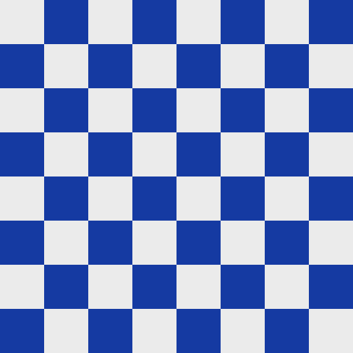
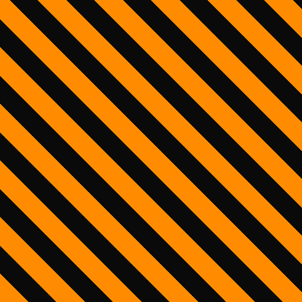

Part 04 · Simulation
The simulator
4.1Why do we need the Simulator?
We used PyBullet to simulate the technology before we ever tested it with the drone for 3 main reasons. Firstly, and most importantly, drones are really expensive, and we are 3 university students that lack the funds for a second drone. Now, this is the main reason that if a plane or car is to be tested, it will go through several stages where each part is simulated under load so that real money and material does not have to be wasted. Now the second reason is that running simulations are much more time efficient when getting the technology to work. For example, if we were to test the escape neuron, DNp06, we would have to set up the drone, and lunge at it every time we wanted to test small code changes. Having the simulation allows us to test these small code changes without having to use the drone, which brings me into the last reason: there is only one drone between the three of us. Due to there only being one drone, if for example, someone made a change to the optical flow and wanted to test it, but another person is testing another part of the software that they changed, this will create a queue that will slow down the development. In summary, the simulations allow us repetition, no queue to test, the ability to break things for free, and most importantly confidence in testing it with the real drone.
4.2Framework (PyBullet)
As previously mentioned, we are using the framework PyBullet for our simulation. PyBullet is an open-source Python library that is used for physics simulations. In our case, it allows us to track and test masses, forces, torques, collisions, etc., and do this all for free. Along with it being free, we chose to use it over other physics engines because the rest of our code is written in python, so it made connecting what we wanted to test to the simulation a lot easier. PyBullet not only allows us to simulate physics, but also allows us to render in a camera and respond to keyboard/mouse events. With the camera rendering, we are able to feed what the camera sees into the other models that we created, to test. So, for example, if we wanted to test optical flow, we would feed the camera into the optical flow model and then move objects towards the camera to see if optical flow is really working.
4.3The Two Clocks
Now we are going to get into the technical nitty-gritty. The drone runs with 2 clocks, a physics clock and a decision clock. The decision clock runs at 30 Hz (33 ms), measures how the picture changed, and based on that chooses what it wants to do. Once it makes a decision, it sets a target (forward speed, sideways speed, spin rate and climb direction) for what to do in that situation, such as “move to the left at 1 m/s”. The physics clock on the drone deals with the interactions and collisions and runs at 240 Hz, which is 8 ticks for every decision tick. On each of these ticks, the drone checks for collisions then works toward the target through a chain of corrections. The speed error becomes wanted lean, the lean error becomes twist, and the altitude error becomes push. Right before the speed error becomes a lean, the drone also runs a safety net that checks how close the nearest obstacle is. If something is too close, the safety net overrides the target, either by stopping the drone from going forward or by making it back away if the obstacle is really close, so it can veto any command no matter where it came from. Then the physics engine steps the world forward once. Since the safety net runs on every physics tick and not just every decision tick, it can react within 4 ms and not 33.
4.4What are we simulating?
The Body
The body is probably the least interesting part of the simulation, as it is essentially just a floating box with a camera. We chose a box over a quadcopter with four individual motors because it still simulates the tilt and thrust mechanisms without us having to tune each motor, which would add a lot of complexity and wouldn’t help us test the circuits we added. We do lose motor lag and realistic motor limits, but the box still obeys real rigid-body physics, which means it can’t slide sideways and has to lean first. That’s why the dodge takes around a second: the box has to lean before it can move, and that lean time is still shorter than the roughly 2.7 seconds it takes the thrown object to reach the drone (4 m at 1.5 m/s). The box also keeps the simulation simple and repeatable, so any difference between two runs comes from the brain and not from the motors.
The Eyes
The eye is just a camera that sits in the middle of the body and looks out at the nose so that when the drone tilts to move the camera will also tilt. The camera captures a 320x240 picture at 30 frames per second because these are around the parameters of the drone that we are working with. Also the eye is the only way the brain can detect anything, similar to a fly. The simulation knows exactly where all the objects are relative to each other, but we purposefully made the brain unable to read those distances, because the circuit we are testing doesn’t measure depth, it only responds to how the picture changes. (The flight controller does have its own separate safety net that uses the real distances, which we get into in the next section.)
The World
As you’ve probably noticed, the world and all the obstacles are covered in stripes. Although it does add some razzle dazzle to the world, the real purpose of the stripes is for the drone to track its surroundings. A flat uncoloured object/wall doesn’t give the camera anything to track, as the drone “sees” by following patterns in the pictures. So, if there aren’t any patterns, then it’ll be as if the drone sees nothing. The floor is striped for the same reason, so the drone always has something to track.


The Course (Walls and Box)
We simulated 2 long parallel walls and a box that sits in the middle for initial testing to make sure the drone can move around and avoid the walls and the box in the middle and make it to the finish line (a green marker on the opposite side of the walls) autonomously. The finish line is 16 meters from the start, and each run begins from a slightly different sideways position so the drone can’t just memorize one path.
The Thrown Block (Escape Neuron Test)
We then later added a way to spawn a block in front of the drone with a mouse click, which flies straight back at it to simulate the escape neuron. So, when you click the mouse, a striped block spawns 4 meters in the direction the drone is facing and flies at it at 1.5 m/s, which gives the drone just under 3 seconds to react. If the drone dodges successfully, then it disappears, but if there are any collisions, then the drone will hover and land. This way, we can track where and how the crash happened instead of seeing the drone bounce around the world. Every throw is also identical, which we could never get from lunging at the real drone.
The Banana (Model Test)
And finally, the banana model testing. For this, we just stuck a jpeg onto a flat card and then connected the model to the eyes of the drone to test if it would be able to recognize it. We used a photo instead of a 3D model because the model (YOLOv8n) never recognized the 3D version as a banana.
4.5Simulator Limitations
It is impossible for the simulation to simulate the real environment 100%. As mentioned before, the box has no motor lag or motor limits. On top of that, there is no wind, the camera has no noise or motion blur, the lighting never changes, and the stripes are perfectly sharp, which is a lot cleaner than anything the real drone will see. That means a result in the simulation tells us the idea works and the code is correct, but it does not promise the same numbers on the real drone. To close that gap, we ran hundreds of tests with the real drone and fine-tuned the models accordingly; the simulation just served as a good starting point to test all of our code.
4.6Settings at a glance
| Setting | Value |
|---|---|
| Body | Box, 1.0 kg, 30 × 30 × 8 cm |
| Physics clock | 240 Hz (about 4 ms) |
| Decision clock | 30 Hz (33 ms), 8 physics ticks per decision |
| Camera | 320 × 240, 75° field of view, sees from 0.05 m to 50 m |
| Finish line | 16 m from the start |
| Test block | Spawns 4 m away, moves at 1.5 m/s |
| Crash response | Hover for 180 ticks (0.75 s), then land |
| Max speed / tilt / yaw rate | 2.0 m/s / 0.45 rad (about 26°) / 1.5 rad/s |
| Safety distances | Within 0.6 m: no moving forward. Within 0.3 m: back away at 0.25 m/s. Only obstacles within 70° of the nose count. |
| Real drone | DJI Tello, about 80 g, 960 × 720 video at 30 fps, 82.6° diagonal field of view (55.6° vertical) |
Values from Simulator/pybullet_drone.py, Simulator/pybullet_simulator.py and Simulator/camera.py. The Tello's mass is DJI's published spec.
RReferences
- Coumans, E. & Bai, Y. PyBullet, a Python module for physics simulation for games, robotics and machine learning. (2016–). pybullet.org